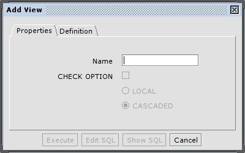
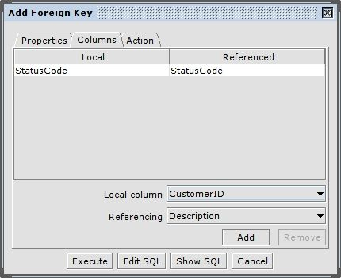
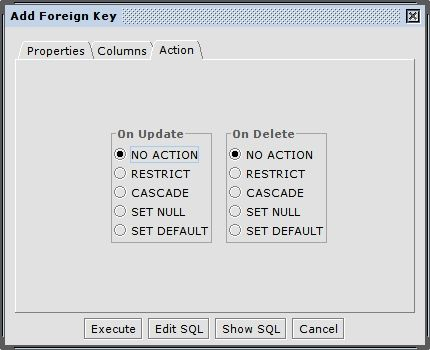
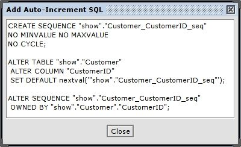
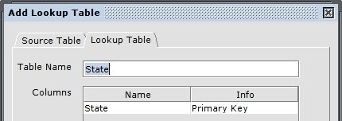
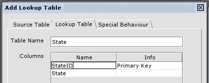
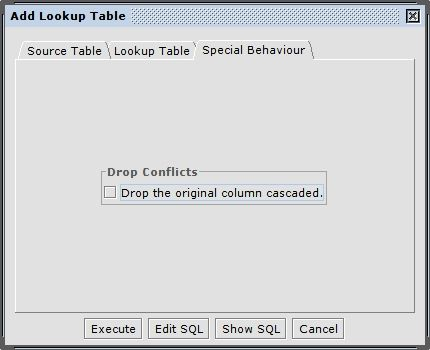

Table
Table
Column
Column
Column
PK
PK
FK
FK
Unique
Constraint
Unique
Constraint

| Contents |
| Introduction |
| Supported Refactorings |
| Supported Refactorings by Databases |
| Using the Refactoring Plugin |
| Menu |
| Dialogs |
The Refactoring plugin adds the ability to easily change the definition or structure of tables / columns in a database. Changes can be made or the SQL for any particular refactoring can be viewed and/or edited. The SQL that is generated is crafted specifically for the database that SQuirreL is connected to and is made with the help of an extended Hibernate dialect framework. You can choose from the following extended Hibernate dialects:
| Apache Derby | Axion | Daffodil | DB2 | Firebird |
| FrontBase | H2 | HSQLDB | Informix | CA Ingres |
| MaxDB | Mckoi | MS-SQLServer | MySQL | Oracle |
| Pointbase | PostgreSQL | Sybase ASE 12/15 | TimesTen |
The following refactorings are supported*:
For example: Apache Derby (10.2.1.6) allowed you to add a new column to an existing table using a SQL statement like "ALTER TABLE ... ADD COLUMN ..." yet it didn't provide a way to drop an existing column via some SQL statement such as "ALTER TABLE ... DROP COLUMN ..." like many other databases do.
A future release of the refactoring plugin will provide implementations of all refactorings on databases that don't support them directly.
The following table summarizes the refactorings and their availability on each supported database:
| Rename Table |
Drop Table |
Add Column |
Modify Column |
Drop Column |
Add PK |
Drop PK |
Add FK |
Drop FK |
Add Unique Constraint |
Drop Unique Constraint |
|
| Axion | - | |
|
*1,4 | |
|
|
- | - | - | - |
| Daffodil | - | |
|
*1,5 | |
|
|
- | - | - | - |
| DB2 | - | |
|
*1,2,5 | - | |
|
- | - | - | - |
| Apache Derby | - | |
|
*3,5 | - | |
|
- | - | - | - |
| Firebird | - | |
|
*4,5 | |
|
|
- | - | - | - |
| FrontBase | - | |
|
*1,5 | |
- | - | - | - | - | - |
| H2 | - | |
|
|
|
|
|
- | - | - | - |
| HSQLDB | - | |
|
*1,3,4,5 | |
|
|
- | - | - | - |
| Informix | - | |
|
*1,3,4,5 | |
|
|
- | - | - | - |
| CA Ingres | - | |
|
*1,2,3,5 | |
|
|
- | - | - | - |
| MaxDB | - | |
|
|
|
|
|
- | - | - | - |
| Mckoi | - | |
|
*1 | |
|
|
- | - | - | - |
| MS-SQLServer | - | |
|
*1,3,4,5 | |
|
|
- | - | - | - |
| MySQL | - | |
|
|
|
|
|
- | - | - | - |
| Oracle | - | |
|
|
|
|
|
- | - | - | - |
| Pointbase | - | |
|
- | |
|
|
- | - | - | - |
| PostgreSQL | |
|
|
|
|
|
|
|
|
|
|
| Sybase | - | |
|
*3,4,5 | |
|
|
- | - | - | - |
| TimesTen | - | |
|
- | |
- | - | - | - | - | - |
*Supported column modifications: 1) Default Value, 2) Column Comment, 3) Column Nullable, 4) Column Name, 5) Column Type
| Add View |
Rename View |
Drop View |
Add Sequence |
Modify Sequence |
Drop Sequence |
Add Index |
Drop Index |
Merge Columns |
Merge Tables |
Add Lookup Table |
Add Auto Increment |
|
| Axion | - | - | - | - | - | - | - | - | - | - | - | - |
| Daffodil | - | - | - | - | - | - | - | - | - | - | - | - |
| DB2 | - | - | - | - | - | - | - | - | - | - | - | - |
| Apache Derby | - | - | - | - | - | - | - | - | - | - | - | - |
| Firebird | - | - | - | - | - | - | - | - | - | - | - | - |
| FrontBase | - | - | - | - | - | - | - | - | - | - | - | - |
| H2 | - | - | - | - | - | - | - | - | - | - | - | - |
| HSQLDB | - | - | - | - | - | - | - | - | - | - | - | - |
| Informix | - | - | - | - | - | - | - | - | - | - | - | - |
| CA Ingres | - | - | - | - | - | - | - | - | - | - | - | - |
| MaxDB | - | - | - | - | - | - | - | - | - | - | - | - |
| Mckoi | - | - | - | - | - | - | - | - | - | - | - | - |
| MS-SQLServer | - | - | - | - | - | - | - | - | - | - | - | - |
| MySQL | - | - | - | - | - | - | - | - | - | - | - | - |
| Oracle | - | - | - | - | - | - | - | - | - | - | - | - |
| Pointbase | - | - | - | - | - | - | - | - | - | - | - | - |
| PostgreSQL | |
|
|
|
|
|
|
|
|
|
|
|
| Sybase | - | - | - | - | - | - | - | - | - | - | - | - |
| TimesTen | - | - | - | - | - | - | - | - | - | - | - | - |
If you find that a supported database has been updated to support an operation directly via SQL, I would appreciate an email to let me know so that I can update the refactoring plugin.(manningr [at] users [dot] sourceforge [dot] net)
To access the refactoring menu right click on a node in the object tree.
Depending on the node or database object you're clicking on, the refactoring menu will provide different refactorings:

Right-click on the table, view or sequence node to access the context menu for adding new views and sequences.

Right-click on a table to access the context menu for table specific refactorings.

Right-click on a view/sequence to access the context menu for view/sequence specific refactorings.
All refactoring dialogs come with a default set of action buttons:


If a database doesn't support an certain option (for example, comments for columns or check options for views) the corresponding field will be disabled (read-only) in the dialog.

For most databases, columns can be added to an existing table without dropping the table and re-creating it.
First, choose a table to add a column to and right-click to access the refactoring menus. (Refactoring > Column > Add Column)
The add column dialog allows you to specify the definition of the new column to be added to the selected table. The "Dialect" drop-down list allows you to see the effect on the SQL when using a different dialect (the SQL generated will be according to the dialect chosen - the dialect of the connected database is selected by default) The type of the column can be chosen from the type list (the types are standard JDBC types which get mapped to vendor-specific types by the dialect specified in the dialect list). The other fields represent allowable attributes of columns in most databases and should be self-explanatory. One thing to note regarding types and length / precision and scale - precision and scale only apply to number types, such as NUMERIC, DECIMAL, FLOAT, etc. The length attribute only applies to character and byte types such as VARCHAR, CHAR, BINARY, etc. In most databases when using BLOB and CLOB types, these attributes are ignored since large objects have length that is variable and high-capacity (2GB).

Specify attributes of the new column.
Existing columns can be modified in most databases, although with many more restrictions on supported attributes than adding a new column.
First, choose a table to modify a column from and right-click to access the
refactoring menus. (Refactoring > Column > Modify Column)
Only one column at a time may be modified in the selected table.

Choose a column to modify.
The attributes of the column to be modified appear in the modify column dialog populated with the current values.

Modify attributes of the selected column.
A table that doesn't already have a Primary Key defined can be altered to specify one. A primary key uniquely identifies each row in the table, and as such must consist only of one or more "non-null" columns. For some databases defining a primary key after table creation implicitly creates constraints which check for "non-null" property, while others require explicit SQL to add these constraints manually. The add primary key feature of the refactoring plugin takes this into consideration for each supported database when generating the SQL necessary to make this change. The following screenshots illustrate adding a primary key to an existing table.
First, choose a table to add a primary key to and right-click to access the refactoring menus. (Refactoring > Referential Integrity > Add Primary Key)
You will see a dialog displaying all of the columns from the selected table that are available for use in the new primary key. You may also change the name of the constraint that is used to enforce the primary key by changing the "Primary Key Name", which by default is set to PK_<Table Name>.
Next, choose the column (or columns) that will form the new primary key for the selected table.

Choose one or more columns to be the primary key.
Adds a foreign key constraint to the selected table to enforce a relationship to another table.
First, choose a table to add a foreign key constraint to and right-click to access the refactoring menus. (Refactoring > Referential Integrity > Add Foreign Key)
The Add Foreign Key dialog allows you to specify the definition of the foreign key constraint.
In the "Properties" tab you need to set the name of the constraint and the table to reference.
Optionally you can select other options and you can choose if you want to create a new index for the foreign key columns.

Define the foreign key constraint.
Next you have to choose the columns of this foreign key in the "Columns" tab. You can add related columns by selecting one from the selected table and one from the referenced table and click the "Add" button. To remove a pair of columns select the corresponding row and click on the "Remove" button.

Choose the referencing columns.
At last you can choose the ON UPDATE and ON DELETE actions in the "Action" tab. By default "On Update" and "On Delete" are set to NO ACTION.

Choose the On Update and On Delete actions.
Adds a unique constraint to the selected table to specify that a group of one or more columns may contain only unique values.
First, choose a table to add a unique constraint to and right-click to access the refactoring menus. (Refactoring > Data Quality > Add Unique Constraint)
The Add Unique Constraint dialog allows you to specify the definition of the unique constraint.
In the "Properties" tab have to set the name of the constraint.

Define the name of the unique constraint.
Next you have to choose the columns of this unique constraint in the "Columns" tab. At least one column has to be added.

Choose the columns.
Creates a view based on existing tables in the database.
First, select a view or the view node and right-click to access the refactoring menus. (Refactoring > Add View)
In the "Properties" tab you have to set the name of the view. If the database supports CHECK options you can enable them and choose between LOCAL and CASCADE.

Define the name and other options of the view.
Next you have to specify the query that defines the view's content in the "Definition" tab.
There are only two restrictions on how this query should look like:
1) There has to be at least a "select" and "from" in the definition before it is accepted as a query.
2) The query mustn't be terminated with a semicolon (;). If there is a semicolon, the generated statement might lead to errors on execution.

Specify the query that defines the view's content.
Adds auto-incrementing to a column of the selected table.
First, select a table to add auto-increment to and right-click to access the refactoring menus. (Refactoring > Data Quality > Add Auto-Increment)
In the first dialog you can select the column you want to add auto-increment to.

Select the column to add auto-increment to.
In the next dialog you don't have to set any other options. The behaviour and implementation of auto-incrementation is very database specific. Click on the Show SQL button to see how the Auto-Increment functionality is realized on the current database.

An example how Auto-Incrementation is realized for PostgreSQL.
Creates a lookup table for an existing column.
First, select a table to add a lookup table to and right-click to access the refactoring menus. (Refactoring > Data Quality > Add Lookup Table)
In the "Source Table" tab have to select the source column for the lookup table and the mode you want to use.
If you wish you can also change the suggested name for the foreign key constraint.
There are two different modes to choose from:
1) Keep the content of the original column and use it as a reference to the new lookup table's primary key.
2) Replace the content of the original column with an integer to reference the lookup table.

Select the column, mode and foreign key name for the refactoring.
Next you can change the names of the lookup table and its column(s) in the "Lookup Table" tab.
To change the name of a column double-click on the name field, change the name and save it by pressing the ENTER key.
The amount of columns in the lookup table depends on the mode you've selected.

Mode 1: Only one Column with distinct values from the source table.

Mode 2: Two columns, an integer column as primary key and a column with the distinct values from the source table.
If you've selected the second mode there is an additional "Special Behaviour" tab. In this tab you can specify behaviour of this refactoring. This becomes nessesary because mode 2 may drop the source column to replace it with an integer column to reference the new lookup table. Because the source column could be used by other database objects like views, you have to decide if you want to drop the column cascaded. (Default: column is dropped NOT cascaded)

Select special behaviour for the second mode.
Merges the content of two columns of the selected table.
First, select a table to merge columns in and right-click to access the refactoring menus. (Refactoring > Column > Merge Columns)
In the displayed Merge Column dialog you are able to select the two columns you want to merge. (You can only merge columns from the same, selected table.)
Next you can choose if you want to create a new column or use one of the two selected columns for the merged content.
(If "new Column" is chosen, the newly created column will be of the type VARCHAR with a size/length that fits the longes merged content.)
And finally there's a field for an optional joining string that is inserted between the content of the two columns.

Select the columns to be merged and other options.
Important: When you merge the columns into one of the selected columns, this column's type needs to fit the type of the merged content. (For example, when merging an area code with a local phone number into the local phone number column with an integer type, you should NOT add a join string like " " or "/", etc.)
Merges multiple columns from a table into the selected table.
First, select a table to merge columns of an other table into and right-click to access the refactoring menus. (Refactoring > Table > Merge Tables)
In the "Properties" tab you are able to select the table you want to merge columns from.
You can also choose if only the column definitions or even the data in the columns should be merged.
And finally you have to define the relation between the two tables.

Select the table to merge from and define the relation between the tables.
Important: For an accurate merge the relation between the selected table and the other table (merge table) should be "many/one to one". Because if there are multiple entries in the other table referencing the same entry in the selected table, only the content of the last one will be applied to the referenced entry in the selected table.
Next you can select the columns to be merged from the other table into the selected table in the "Columns" tab.
Choosing columns with a name that is already used by a column in the selected table, leads to an error during the execution of this refactoring.

Select the columns to merge into the selected table.